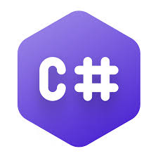
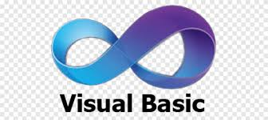
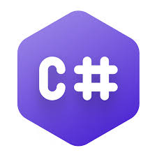
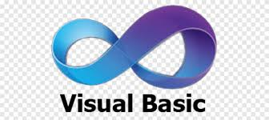

EDGAR LEONARDO PARRA ALVAREZ
Ingeniero de Sistemas
PERFIL
Ingeniero de sistemas de la universidad UNIREMINGTON, con conocimiento en el área profesional, desarrollo de aplicaciones en HTML5 (CCS, JS) en sus framework más usados actualmente, manejo de bases de datos SQL SERVER, ORACLE DB y POSTGRESQL (planeación, normalización, modificaciones y realización de diversas consultas), con experiencia de un año en alistamiento y reparación de computadores, dos años en el uso de bases de datos y programación .NET en MVC, actualmente reforzando conocimientos en el lenguaje .NET, con interés en adquirir conocimientos y habilidades en el área de desarrollo de software, ya que en la Ingeniería de Sistemas hay varias áreas derivadas para profundizar y su preferencia es en el desarrollo (.NET) y manejo de bases de datos (SQL SERVER). Con habilidades para trabajar en equipo, buenas relaciones interpersonales, comunicación acertada y disposición para aprender. Persona con un alto sentido de responsabilidad social, innovadora, creativa, emprendedora y comprometida.
TECNOLOGIAS USADAS

 



FORMACIÓN ACADÉMICA
- Ingeniero de Sistemas CORPORACION UNIVERSITARIA UNIREMINGTON Culminado: 19 de diciembre de 2019 Bogotá D.C.
- TÉCNICO PROFESIONAL: Técnico de Sistemas e Informática Instituto Superior de Educación Social - ISES Inicio: 2012 Culminado: 2014 Bogotá D.C. TRABAJO DE GRADO: Realización de aplicación para Android, con manejo de HTML5, Javascript, CSS (para realizar hojas de estilo) utilizando los Framework Cordova y Jquery- Mobile, eclipse. En el cual se desarrolló una APK la cual tenía la función de proporcionar
- información de diversos servicios relacionados con vehículos automotores “carros - motocicletas” entre los cuales estaba el conseguir parqueaderos, lavados de vehículos, puntos SIM, lugares para realizar tecno-mecánica, entre otros.
- SEMINARIO ORACLE DATABASE: En este seminario se realizó la implementación de diversas técnicas para la manipulación de bases de datos relacionales, creando, leyendo, actualizando y eliminando datos de la mejor manera, con el fin de conservar la información en su totalidad, para poder usarla con su mayor respaldo. CURSOS COMPLEMENTARIOS
- INSTITUTO DE LEGUAS DE LA UNIVERSIDAD PEDAGOGICA NACIONAL PRESENCIAL – INGLES, en proceso, actualmente, en el cual se lleva cursado un 62% de la totalidad del curso, con un total de 5 semestres realizados. SENA PRESENCIAL - CURSO ESPECIAL EN MICROSOFT EXCEL BÁSICO 2012/06/04 Bogotá D.C.
- SENA PRESENCIAL - CURSO ESPECIAL EN ANALISIS Y ADMINISTRACION DE DATOS EN LAS HERRAMIENTAS DE EXCEL INTERMEDIO 2012/03/27 Bogotá D.C.
- SENA PRESENCIAL - CURSO ESPECIAL EN MANEJO BÁSICO DE INFORMÁTICA Y SISTEMA OPERATIVO WINDOWS 2012/02/29 Bogotá D.C.